Design Lab North · studio pack · you, not they
You type in the sandbox. Each enter cements a colour. After three, you push — live matches in one hit. No swipe. The large line under “Said on the film” is narration. Silent cut has that track off.
Landscape · narration Landscape · silent Portrait · narration Portrait · silent
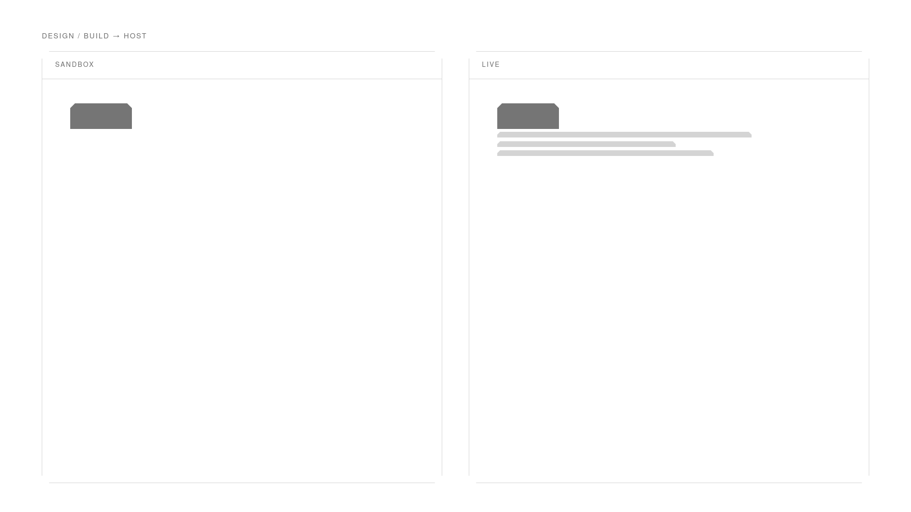
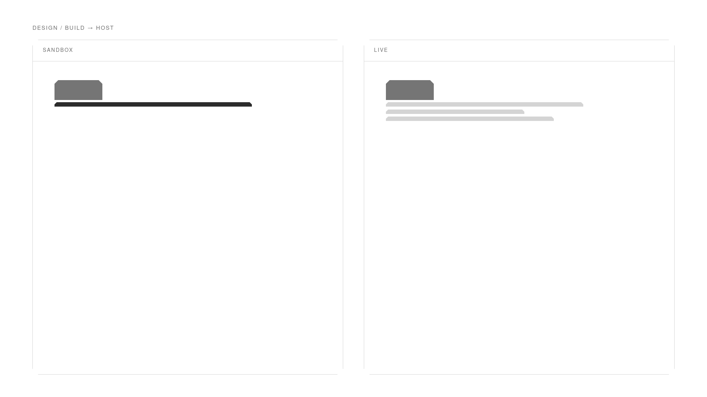
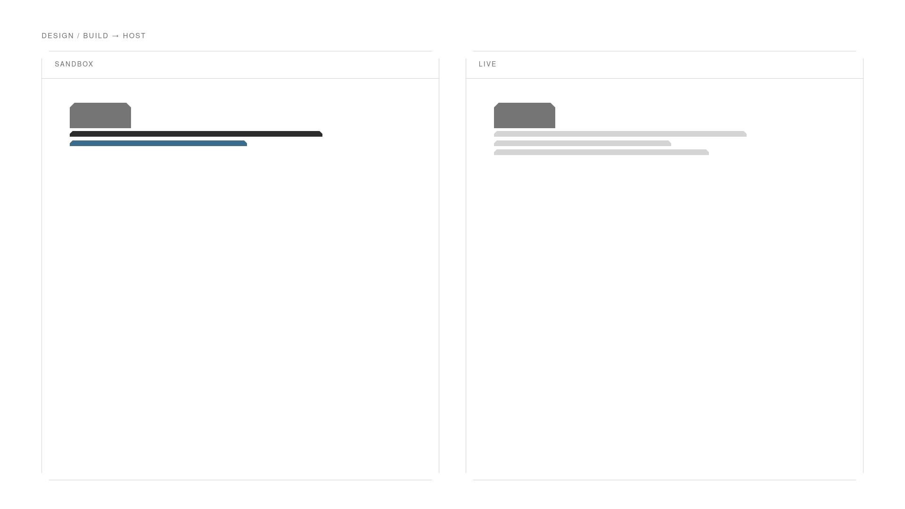
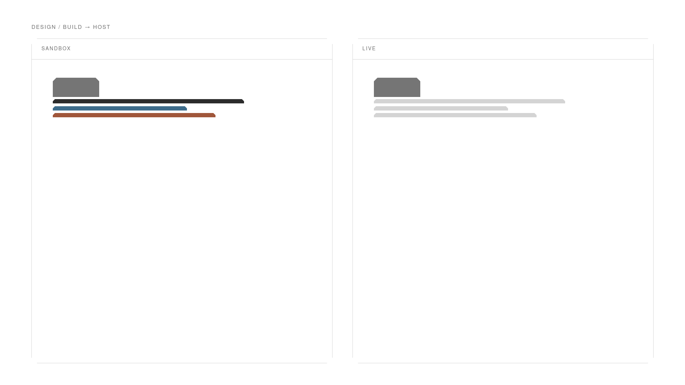
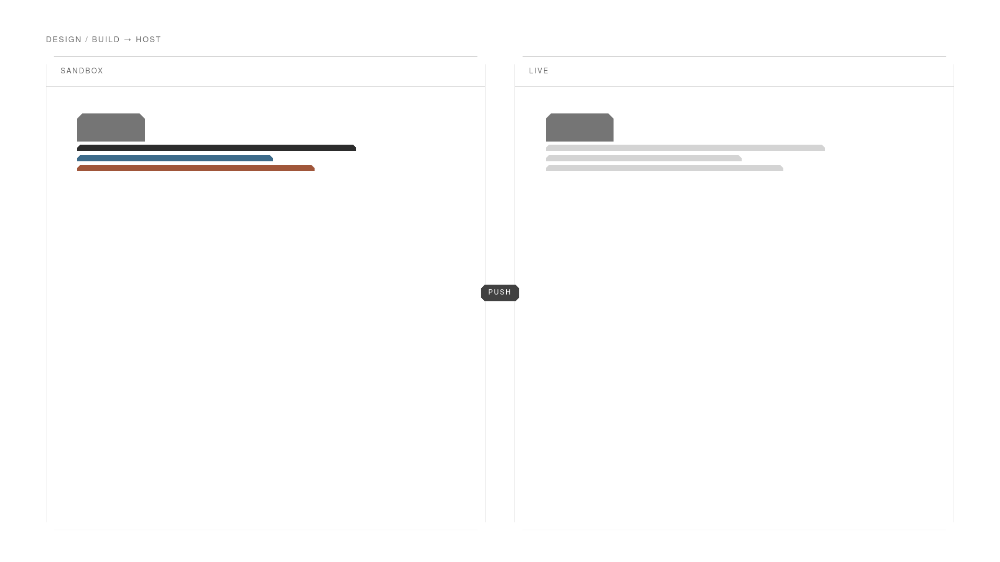
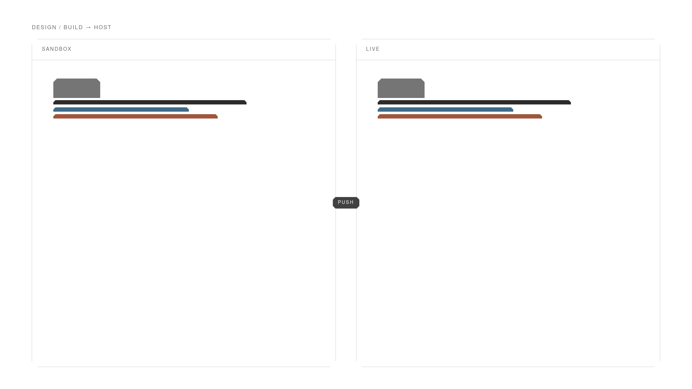
Sandbox on top. Same clunks. Live snaps after push.
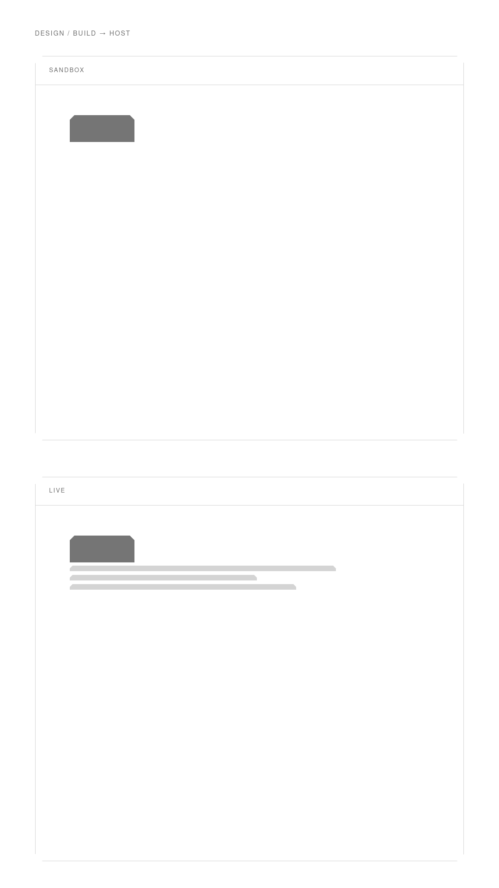
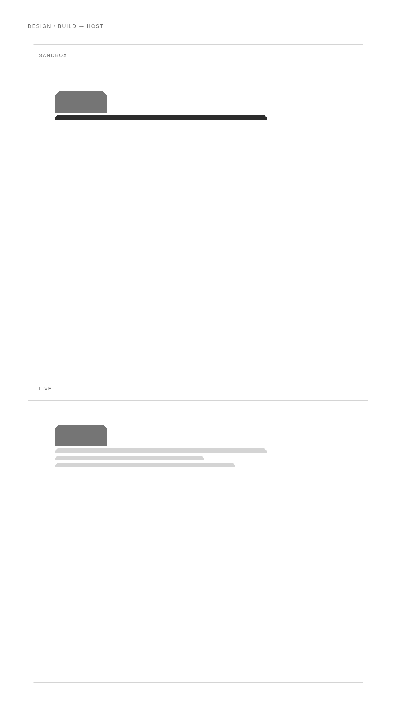
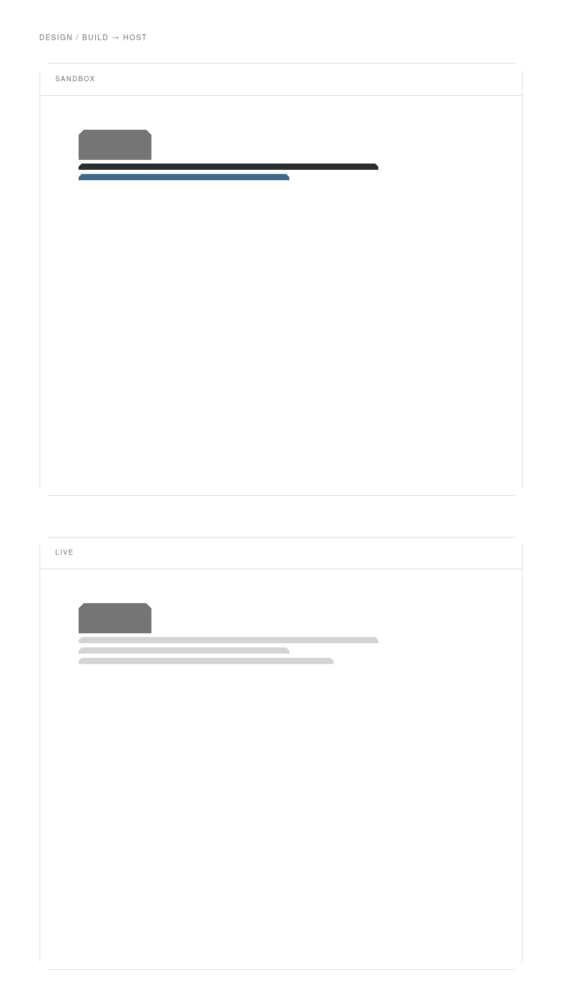
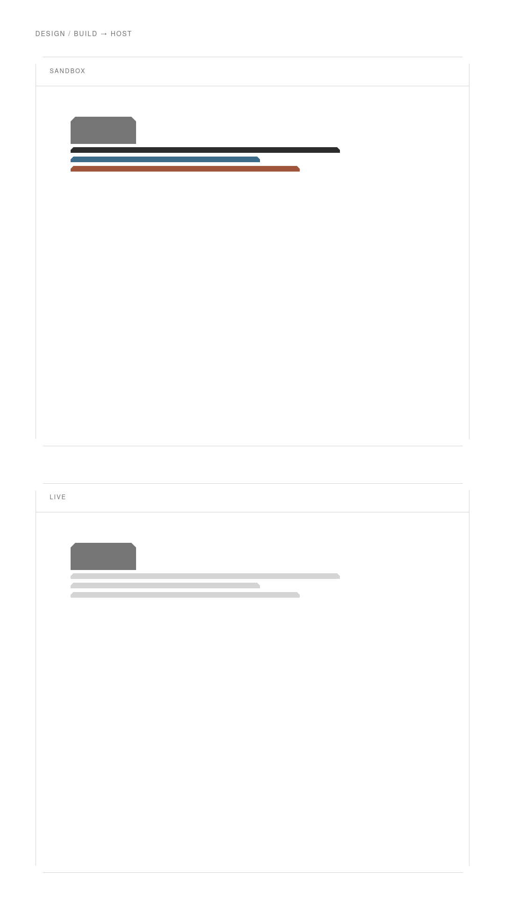
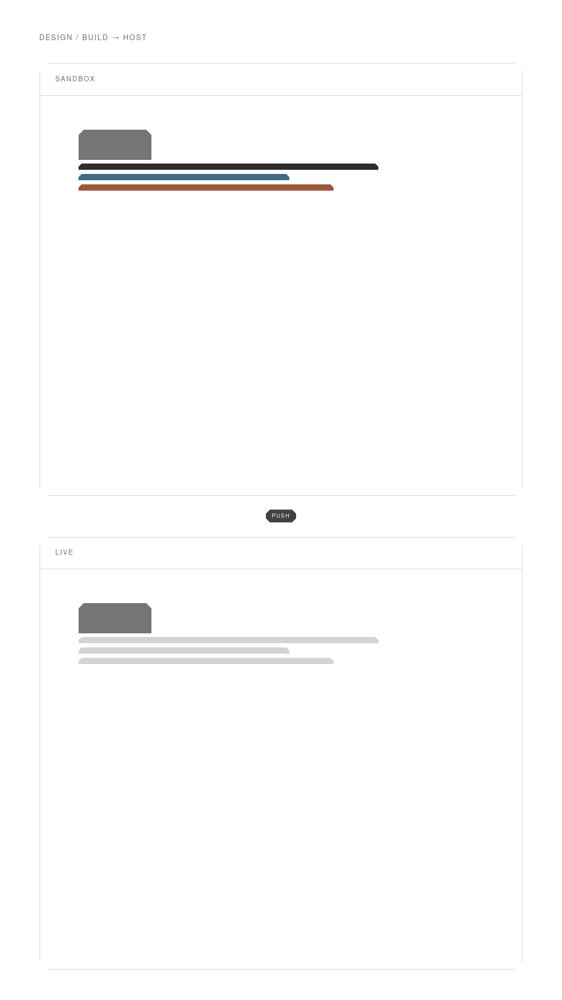
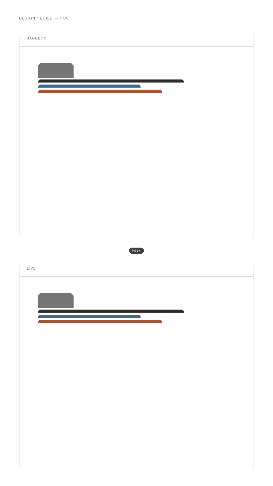
Same motion. No “Said on the film” track.